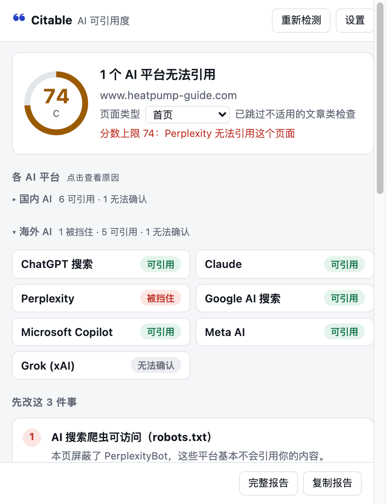
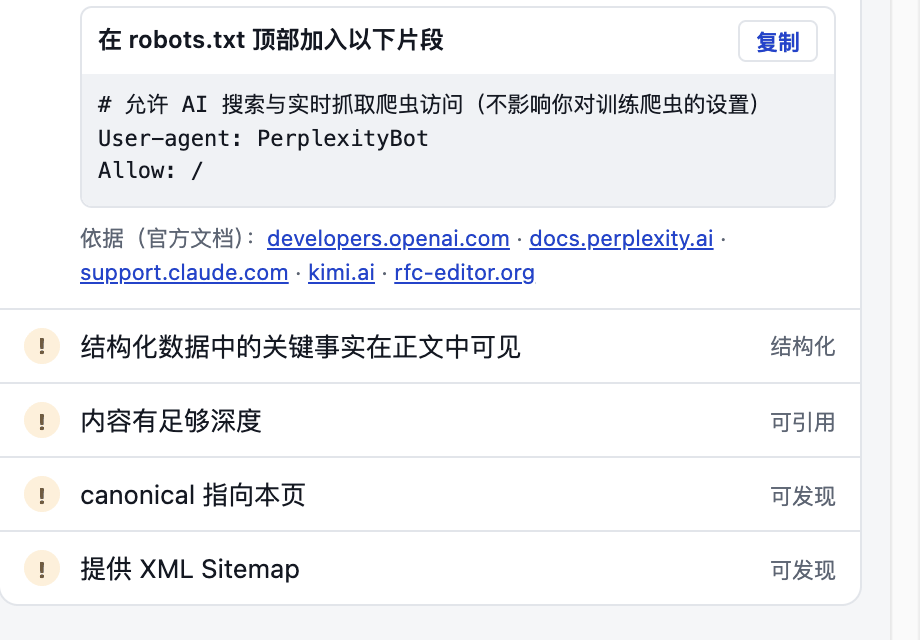
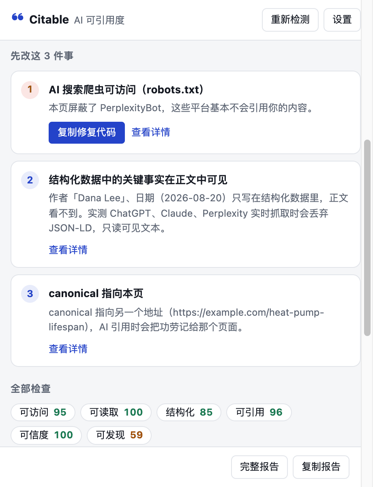
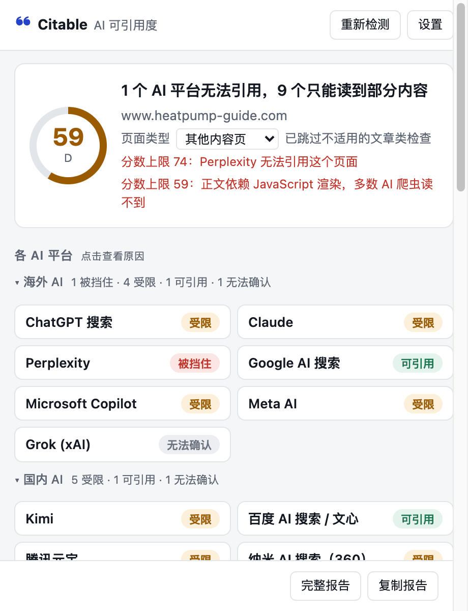

免费 · 不用注册 · 几秒出结果
你的网页，
AI 搜索能引用吗？
越来越多的人直接问 AI。Citable 逐个检查豆包、Kimi、DeepSeek、ChatGPT、Perplexity 等 14 个国内外 AI 平台能不能抓取你的页面、为什么，并告诉你先改哪 3 件事。
- 国内 7 个 + 海外 7 个 AI 平台
- 每条结论标注依据，拿不准就写「无法确认」
- 浏览器插件在本地检测，网页内容不上传

多数网站，AI 进得来，却读不懂
我们用同一套规则检测了 100 个中文网站首页和 32 篇文章页（2026 年 10 月）。
点一下，看到这三件事
插件读取的是你正在看的页面，所以登录后的页面、测试环境、刚发布还没被收录的文章都能检测。
每个 AI 平台能不能引用，点开就是原因
国内、海外分组，逐个平台给出「可引用 / 受限 / 被挡住 / 无法确认」。点开任意一项，能看到具体是哪条规则挡住了哪个爬虫、该怎么改，以及依据来自哪份官方文档。
- 按 robots.txt 标准判断，包括分组、通配和继承规则
- 拿不准的平台不编结论，写明「无法确认」

先改这 3 件事，修复代码直接复制
30 多条检查按影响排序，最该先改的放在最前面。robots.txt 片段、Organization 和 Article 结构化数据等修复代码自动生成，复制就能用。
- 每条检查标注证据强度：官方文档、研究、行业经验还是新兴做法
- 不适用的检查自动跳过，比如首页不检查文章作者

找出 AI 爬虫看不到的内容
多数 AI 爬虫不执行 JavaScript，只能读到服务器返回的 HTML。插件对比服务器返回的页面和你在浏览器里看到的页面，告诉你有多少正文 AI 根本读不到。
- 正文靠 JavaScript 渲染时，分数会被封顶并说明原因
- 会渲染 JavaScript 的平台（如 Google）单独判断

三步用起来
- 安装插件Chrome、Edge 都能用；国内网络通常可以直接打开 Edge 加载项商店。
- 打开要检测的网页，点图标1–2 秒出结果，只读取当前这一页。
- 按顺序改，改完再测一次复制修复代码交给开发，或者导出 Markdown 报告发给团队。
覆盖 14 个 AI 平台，依据如实标注
各平台公开的信息多少不一样。我们按依据强弱分级，不把猜测当结论。
国内 AI
- Kimi官方公开爬虫
- 百度 AI 搜索 / 文心依赖百度搜索索引
- 腾讯元宝依赖搜狗搜索索引
- 豆包二手信息（Bytespider）
- 通义 / 夸克二手信息（YisouSpider）
- 纳米 AI 搜索（360）二手信息（360Spider）
- DeepSeek未公开爬虫，标为「无法确认」
海外 AI
- ChatGPT 搜索官方公开爬虫（OAI-SearchBot）
- Claude官方公开爬虫（Claude-SearchBot）
- Perplexity官方公开爬虫（PerplexityBot）
- Google AI 搜索Googlebot，会渲染 JavaScript
- Microsoft CopilotBingbot
- Meta AI官方公开爬虫（Meta-WebIndexer）
- Grok（xAI）未公开爬虫，标为「无法确认」
「二手信息」指平台没有官方说明、只有行业报道的对应关系，结论会单独注明；屏蔽训练用的爬虫（如 GPTBot、ClaudeBot）不影响 AI 搜索引用，插件会分开说明。
适合谁
改版或发文前过一遍，确认没有误挡 AI 爬虫，也知道下一步先改什么。
看文章有没有作者、日期、清晰的小节和首段结论，这些决定 AI 能不能摘录你的内容。
同时看国内和海外 AI 平台，一份报告就能说清两边的差别。
直接拿到 robots.txt 片段和结构化数据代码，并知道哪些正文因为 JavaScript 渲染而被漏掉。
隐私与可信
插件只申请「点击时读取当前网站」的权限，不会在后台读取你浏览的任何页面。
检测在你的浏览器里完成，网页内容不会上传到我们的服务器。
匿名使用统计需要你主动同意，可以随时关闭，也从不记录你检测的网址。
数据报告里的每一处更正都写在页面上。觉得结论不对？告诉我们。
常见问题
Citable 收费吗？
免费，不用注册。在线检测和浏览器插件都不收费。
会把我的网页内容上传吗？
插件在你的浏览器本地检测，网页内容不会上传到我们的服务器。首页的在线检测需要把你输入的网址发到我们的服务器，由服务器读取该网页的公开内容，结果只在内存中缓存最多 1 小时，不写入磁盘，也不和任何身份关联。
检测结论准确吗？
每条结论都标注依据：来自平台官方文档、公开研究还是行业经验。依据不足时（例如 DeepSeek、Grok 没有公开爬虫）直接写「无法确认」，不编结论。觉得结论不对，可以在插件里点「不准确」或通过反馈页告诉我们。
和传统 SEO 工具有什么不同？
SEO 工具关心的是在搜索结果里排第几。Citable 关心的是 AI 搜索能不能读到、能不能引用你的页面：逐个 AI 平台判断爬虫能否进入、不执行 JavaScript 时能否看到正文、AI 能否认出你是谁，并给出可以直接复制的修复代码。
在线检测和插件有什么区别？
在线检测是快速版：只读取服务器返回的 HTML，几秒出结果，适合先看个大概。插件能对比浏览器渲染后的页面（发现靠 JavaScript 渲染、AI 爬虫看不到的正文），给出修复代码和完整报告，也能检测需要登录或内网的页面。
改完多久能被 AI 引用？
取决于各平台重新抓取你的页面的频率，通常几天到几周不等，我们无法控制。能做的是改完立刻复测，确认页面本身已经没有问题。
先测一个你最在意的页面
首页、最重要的产品页，或者最近发布的一篇文章。
点按钮会打开邮件，发给 wuyuwentian@gmail.com 即可；在微信里打开可以复制这个地址。